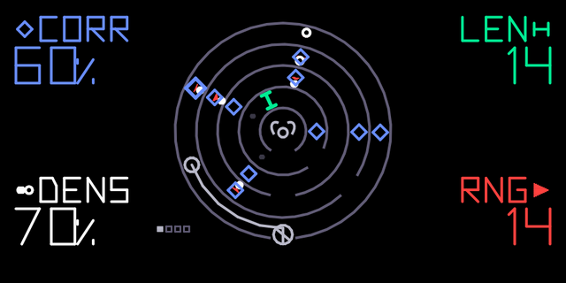

meikyu
sequencer
a 16-step shift register that rewrites itself as it plays. it checks which engine is loaded: melodies on toro, eight drum pads on theseus.
| corr | chance a step is rewritten / rate | |
| len | 2 to 16 steps / gate | |
| dens | how many steps play / scl | |
| rng | pitch range / hold |